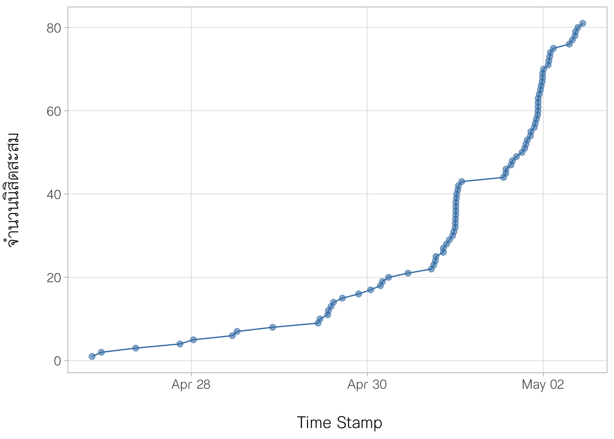

เนื้อหาส่วนนี้เป็นเฉลยการบ้านเรื่อง multiple regression I รายละเอียดมีดังนี้
1. ภาพรวมของการทำกิจกรรม
update วันที่ 2 พฤษภาคม 2566 เวลา 10:50 น. มีนิสิตเข้ามาทำการบ้านรวม 81 คน รูป 1 แสดงแนวโน้มการทำการบ้านของนิสิต
รูป 1 แนวโน้มการทำการบ้านของนิสิตในระหว่างวันที่ 27 เมษายน - 2 พฤษภาคม 2566
2. เฉลยการบ้าน
นักวิจัยเก็บรวบรวมข้อมูลของโรงเรียน โดยสุ่มตัวอย่างโรงเรียนจากประชากรของโรงเรียนในเขตพื้นที่แห่งหนึ่ง ได้ข้อมูลดังนี้
https://drive.google.com/file/d/1NmKbcMYfEoA91_dYhiD7YCVEl3CHzL3a/view?usp=sharing
คำอธิบายข้อมูล
1. mean_ach = ค่าเฉลี่ยคะแนนผลสัมฤทธิ์ทางการเรียนวิชาคณิตศาสตร์ของนักเรียนในโรงเรียน (ตัวแปรตาม)
2. size = จำนวนนักเรียนภายในโรงเรียน (คน)
3. sector = สังกัดของโรงเรียน
4. pracad = สัดส่วนของนักเรียนที่เรียนสายวิทยาศาสตร์ในโรงเรียน
5. disclim = บรรยากาศความเคร่งครัดระเบียบวินัยของโรงเรียน
6. himnty = จำนวนคนต่างด้าว/ชนกลุ่มน้อยในโรงเรียน
7. meanses = ค่าเฉลี่ยคะแนนเศรษฐานะของนักเรียนในโรงเรียน
จงวิเคราะห์ข้อมูลที่กำหนดให้ แล้วตอบคำถามต่อไปนี้

2.1 ชุดข้อมูลข้างต้นมีตัวแปรอิสระที่เป็น ตัวแปรเชิงปริมาณ จำนวนกี่ตัวแปร
มีจำนวน 4 ตัวแปร ได้แก่ size, pracad, disclim และ meanses (ไม่นับ mean_ach เพราะเป็นตัวแปรตาม)
2.2 ชุดข้อมูลข้างต้นมีตัวแปรอิสระที่เป็นตัวแปรจัดประเภท จำนวนกี่ตัวแปร
มีจำนวน 2 ตัวแปร ได้แก่ sector และ himnty
2.3 เมื่อดำเนินการวิเคราะห์การถดถอย สมการถดถอยที่นิสิตประมาณได้มีปัญหาการละเมิดข้อตกลงเบื้องต้นข้อใดบ้าง (ตอบได้มากกว่า 1 ข้อ)

ดำเนินการวิเคราะห์การถดถอย ดังนี้
คลิกเลือก module “Regression” จากนั้นเลือก “Linear Regression”
ในหน้าต่าง Linear Regression นำตัวแปรตามเข้าไปในช่อง Dependent Variable นำตัวแปรอิสระเชิงปริมาณเข้าไปในช่อง Covariates และนำตัวแปรอิสระแบบจัดประเภทเข้าไปในช่อง Factors ดังรูปด้านบน
- บนแถบเมนู “Assumption Checks” คลิกเลือก Collinearity statistics, Normality test, Q-Q plot of residuals และ Residual plots จะได้ผลการตรวจสอบข้อตกลงเบื้องต้นที่จำเป็นของการวิเคราะห์การถดถอยเชิงพหุดังนี้

จากผลการวิเคราะห์ข้างต้น เมื่อพิจารณา residual plots, heteroscedasticity tests, normality tests, Q-Q plot และ collinearity statistics ไม่พบว่ามีการละเมิดข้อตกลงเบื้องต้นตามตัวเลือก ได้แก่ linearity, homoscedasticity, normality และ no multicollinearity ดังนั้นสรุปว่า สมการถดถอยที่ประมาณได้ไม่มีปัญหาการละเมิดข้อตกลงเบื้องต้น
2.4 upload รูปตาราง Model Fit Measures ที่มีผลการทดสอบ F-test
ในกรณีต้องการผลการวิเคราะห์ Overall F-test เพิ่มเติม ผู้วิเคราะห์จะต้องคลิกเลือกที่เมนู “Model Fit” จากนั้นเลือก F-test เมื่อดำเนินการแล้วจะได้ผลการวิเคราะห์ะเพิ่มเติมในตาราง Model Fit Measures ดังรูป

2.5 ผลการทดสอบ F-test ที่ได้เป็นอย่างไร
สมมุติฐานการทดสอบของ Overall F-test มีดังนี้
\(H_0: \beta_{size} = \beta_{pracad} =\beta_{disclim} = \beta_{meanses} = \beta_{sector} = \beta_{himnty} = 0\)
\(H_1: not \ H_0\) (มีตัวแปรอิสระอย่างน้อย 1 ตัวที่มีอิทธิพลต่อผลสัมฤทธิ์ทางการเรียนของนักเรียน)
จากตาราง Model Fit Measures ในข้างต้นพบว่า ค่า p-value ของสถิติทดสอบ F มีค่า <.0001 (ปฏิเสธ H0) จึงสรุปว่า มีตัวแปรอิสระอย่างน้อย 1 ตัวที่มีอิทธิพลต่อผลสัมฤทธิ์ทางการเรียนของนักเรียนอย่างมีนัยสำคัญทางสถิติที่ระดับ .05
2.6 นิสิตคิดว่าสมการถดถอยที่ประมาณได้มีความเหมาะสมและมีประสิทธิภาพเพียงพอที่จะใช้อธิบายความสัมพันธ์ระหว่างตัวแปรตามกับตัวแปรอิสระที่กำหนดแล้วหรือไม่ เพราะเหตุใด
เหมาะสม ด้วยเหตุผล 2 ประการ ประการแรก คือไม่พบหลักฐานว่ามีการละเมิดข้อตกลงเบื้องต้นของการวิเคราะห์การถดถอย และประการที่สอง ค่าสัมประสิทธิ์การตัดสินใจของสมการถดถอยที่ประมาณได้มีค่าเท่ากับ 0.710 แสดงว่าสมการสามารถอธิบายความผันแปรใน mean_ach ได้คิดเป็นร้อยละ 71.0 ซึ่งอยู่ในระดับที่สูง
2.7 สมมุติว่าสมการถดถอยที่ประมาณได้มีความเหมาะสมแล้ว ตัวแปรอิสระใดที่มีอิทธิพลทางบวกและทางลบต่อคะแนนผลสัมฤทธิ์ทางการเรียนของนักเรียนมากที่สุด
การตอบคำถามข้อนี้ให้พิจารณาจากเครื่องหมายและค่าของสัมประสิทธิ์การถดถอยมาตรฐาน โดยผู้วิเคราะห์จะต้องเรียกผลการวิเคราะห์เพิ่มเติมได้แก่ ค่าสัมประสิทธิการถดถอยมาตรฐาน (standardized regression coefficients) โดยให้เลือกเมนู “Model Coefficients” แล้วคลิกเลือกที่ “Standardized estimate” ผลการวิเคราะห์ที่ได้เพิ่มเติมมีดังนี้

จากผลการวิเคราะห์ข้างต้นจะเห็นว่าตัวแปรอิสระที่มีสัมประสิทธิ์การถดถอยมาตรฐานเป็นบวกและมีค่ามากที่สุดคือ meanses โดยมีค่าเท่ากับ 0.487 ส่วนตัวแปรอิสระที่มีสัมประสิทธิ์การถดถอยมาตรฐานเป็นลบและมีค่ามากที่สุดคือ himnty โดยมีค่าเท่ากับ -0.388 ดังนั้นสรุปได้ว่า ตัวแปรอิสระใดที่มีอิทธิพลทางบวกและทางลบต่อคะแนนผลสัมฤทธิ์ทางการเรียนของนักเรียนมากที่สุดคือ meanses และ himnty ตามลำดับ
2.8 จงแปลผลความชันของตัวแปรอิสระที่มีผลทางบวกมากที่สุด
พิจารณาสัมประสิทธิ์การถดถอยแบบคะแนนดิบของตัวแปร meanses พบว่ามีค่าเท่ากับ 3.668 แปลความหมายได้ว่า ถ้าโรงเรียนที่มีคะแนนเฉลี่ยเศรษฐานะของนักเรียนเพิ่มขึ้น 1 คะแนน ค่าเฉลี่ยผลสัมฤทธิ์ทางการเรียนของนักเรียนในโรงเรียนมีแนวโน้มที่จะเพิ่มขึ้น 3.668 คะแนน
2.9 จงแปลผลความชันของตัวแปรอิสระที่มีผลทางลบมากที่สุด
พิจารณาสัมประสิทธิ์การถดถอยแบบคะแนนดิบของตัวแปร himnty พบว่ามีค่าเท่ากับ -1.210 โดยตัวแปร himnty เป็นตัวแปรแบบจัดประเภท ดังนั้นสามารถแปลความหมายได้ว่า ผลสัมฤทธิ์ทางการเรียนโดยเฉลี่ยของนักเรียนในโรงเรียนที่มีจำนวนนักเรียนต่างด้าวมากกว่าร้อยละ 40 มีค่าต่ำกว่าโรงเรียนที่มีจำนวนนักเรียนต่างด้าวไม่เกินร้อยละ 40 เท่ากับ 1.21 คะแนน
2.10 นิสิตคิดว่าโรงเรียนที่มีลักษณะแบบใดที่นักเรียนมีแนวโน้มจะมีคะแนนผลสัมฤทธิ์ทางการเรียนอยู่ในระดับสูงมากที่สุด เพราะเหตุใด
เมื่อพิจารณาจากเครื่องหมายและค่าของสัมประสิทธิ์การถดถอยมาตรฐาน พบว่า โรงเรียนที่มีลักษณะคือ (1) นักเรียนในโรงเรียนมีแนวโน้มที่ฐานะทางบ้านดี (2) มีนักเรียนต่างด้าวเป็นจำนวนน้อย (3) มีนักเรียนที่เลือกเรียนในสายวิทยาศาสตร์ในสัดส่วนที่มาก (4) เป็นโรงเรียนขนาดใหญ่ (5) อยู่ภายใต้สังกัด B และ (6) มีการเคร่งครัดในระเบียบวิจัยที่ไม่มาก เป็นโรงเรียนที่มีแนวโน้มจะมีคะแนนผลสัมฤทธิ์ทางการเรียนยอู่ในระดับสูงมากที่สุด ทั้งนี้เป็นเพราะภายใต้เงื่อนไขดังกล่าวจะทำให้แนวโน้มคะแนนผลสัมฤทธิ์ทางการเรียนในสมการถดถอยที่ประมาณได้จากข้อมูลชุดนี้มีค่าสูงสุด